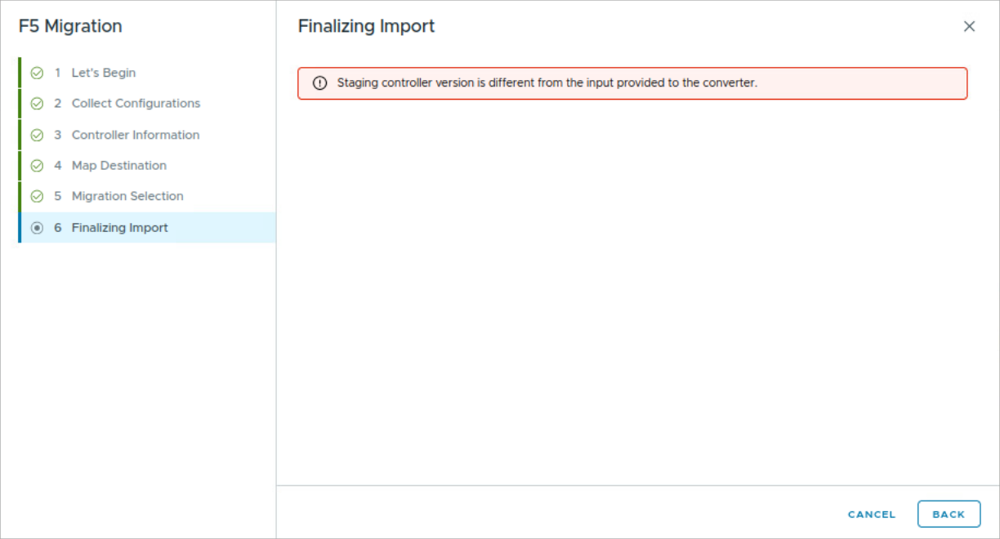

A quick one from the lab Migrate to VMware Avi Load Balancer using the Avi Conversion Tool (HOL-2740-05-ANS-L). If the F5 migration fails with Staging controller version is different from the input provided to the converter, enter 32.1.1 as the controller version. Click any photo to enlarge it.
The problem
The manual I had said to enter 31.1.1 as the version of the staging controller:

The wizard then fails at the last step, and no iRules come through:


The fix
The version has to match what the controller actually runs. You can see it on the controller under Administration:

Go back to Controller Information and enter 32.1.1:

Now the import goes through and the iRules show up: